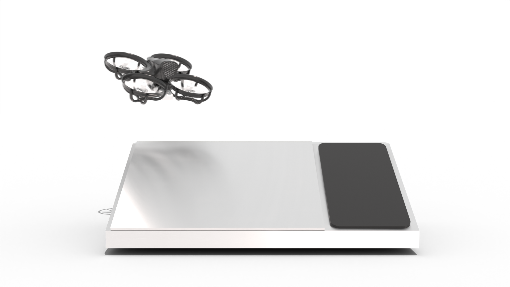

No More Mosquitoes
Tornyol is a Y Combinator-backed French startup that developed a 40-gram autonomous micro-drone designed to track and kill mosquitoes using ultrasonic sonar instead of chemical sprays.

How it works
-
01
Draw your zone
Define the protection area on the base-station map and start the mission. No installation, no wiring.
-
02
Autonomous patrol
Tornyol patrols the zone continuously, holding coverage and returning to charge on its own.
-
03
Detect & intercept
Ultrasonic sonar reads the wingbeat signature, confirms the target, and neutralizes it mid-air.
-
04
Return & recharge
Between passes the drone lands itself on the base station, recharges, and relaunches — 24/7.
APPLYING
How to apply
Take the first steps toward a mosquito-free home. Submit your request and our team will guide you through availability and delivery.
-
01
Send your request
Share your contact details and the area you’d like to protect.
What to include Your location and any questions for our team. -
02
Check availability
Our team will confirm whether Tornyol is available in your area.
What to expect We’ll explain the next steps and answer your questions. -
03
Confirm your order
Review the details with our team before confirming your order.
Next step We’ll coordinate delivery and setup with you.